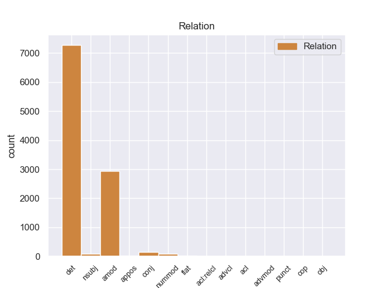
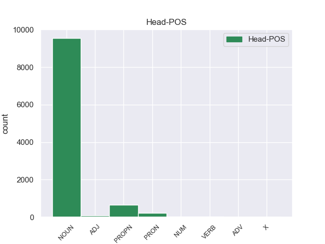
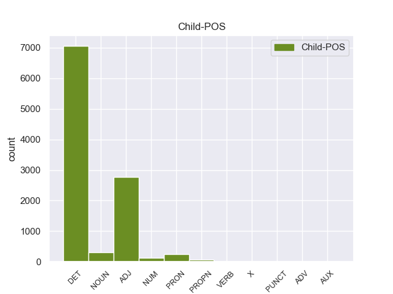

Distribution of features within this leaf



Agreement Rules sorted by frequency.
- When the dependent token is the determiner(det) of the head token,
1 Αυτό _ _ _ _ 0 _ _ _
2 μπορεί _ _ _ _ 0 _ _ _
3 να _ _ _ _ 0 _ _ _
4 μην _ _ _ _ 0 _ _ _
5 οδηγήσει _ _ _ _ 0 _ _ _
6 σ _ _ _ _ 0 _ _ _
7 τη _ _ _ _ 0 _ _ _
8 λήξη _ _ _ _ 0 _ _ _
9 του _ _ _ _ 0 _ _ _
10 εν _ _ _ _ 0 _ _ _
11 λόγω _ _ _ _ 0 _ _ _
12 ζητήματος _ _ _ _ 0 _ _ _
13 αλλά _ _ _ _ 0 _ _ _
14 , _ _ _ _ 0 _ _ _
15 σ _ _ _ _ 0 _ _ _
16 τη _ _ _ _ 0 _ _ _
17 μορφή _ _ _ _ 0 _ _ _
18 υπό _ _ _ _ 0 _ _ _
19 την _ _ _ _ 0 _ _ _
20 οποία _ _ _ _ 0 _ _ _
21 την _ _ _ _ 0 _ _ _
22 λάβαμε _ _ _ _ 0 _ _ _
23 , _ _ _ _ 0 _ _ _
24 αυτή _ _ _ _ 0 _ _ _
25 η _ _ _ _ 0 _ _ _
26 αίτηση _ _ _ _ 0 _ _ _
27 άρσης _ _ _ _ 0 _ _ _
28 της _ _ _ _ 0 _ _ _
29 ασυλίας _ _ _ _ 0 _ _ _
30 ήταν _ _ _ _ 0 _ _ _
31 , _ _ _ _ 0 _ _ _
32 κατά _ _ _ _ 0 _ _ _
33 την _ _ _ _ 0 _ _ _
34 άποψη _ _ _ _ 0 _ _ _
35 της _ _ _ _ 0 _ _ _
36 Επιτροπής _ _ _ _ 0 _ _ _
37 Νομικών _ _ _ _ 0 _ _ _
38 Θεμάτων _ _ _ _ 0 _ _ _
39 , _ _ _ _ 0 _ _ _
40 απαράδεκτη _ _ _ _ 0 _ _ _
41 , _ _ _ _ 0 _ _ _
42 άποψη _ _ _ _ 0 _ _ _
43 την _ _ _ _ 0 _ _ _
44 οποία _ _ _ _ 0 _ _ _
45 συνιστώ _ _ _ _ 0 _ _ _
46 σ _ _ _ _ 0 _ _ _
47 το ο DET _ Case=Acc|Gender=Neut|Number=Sing 48 det _ _
48 Σώμα σώμα NOUN _ Case=Acc|Gender=Neut|Number=Sing 0 _ _ _
49 να _ _ _ _ 0 _ _ _
50 υιοθετήσει _ _ _ _ 0 _ _ _
51 . _ _ _ _ 0 _ _ _
1 Αυτό _ _ _ _ 0 _ _ _
2 μπορεί _ _ _ _ 0 _ _ _
3 να _ _ _ _ 0 _ _ _
4 μην _ _ _ _ 0 _ _ _
5 οδηγήσει _ _ _ _ 0 _ _ _
6 σ _ _ _ _ 0 _ _ _
7 τη _ _ _ _ 0 _ _ _
8 λήξη _ _ _ _ 0 _ _ _
9 του _ _ _ _ 0 _ _ _
10 εν _ _ _ _ 0 _ _ _
11 λόγω _ _ _ _ 0 _ _ _
12 ζητήματος _ _ _ _ 0 _ _ _
13 αλλά _ _ _ _ 0 _ _ _
14 , _ _ _ _ 0 _ _ _
15 σ _ _ _ _ 0 _ _ _
16 τη _ _ _ _ 0 _ _ _
17 μορφή _ _ _ _ 0 _ _ _
18 υπό _ _ _ _ 0 _ _ _
19 την _ _ _ _ 0 _ _ _
20 οποία _ _ _ _ 0 _ _ _
21 την _ _ _ _ 0 _ _ _
22 λάβαμε _ _ _ _ 0 _ _ _
23 , _ _ _ _ 0 _ _ _
24 αυτή _ _ _ _ 0 _ _ _
25 η _ _ _ _ 0 _ _ _
26 αίτηση _ _ _ _ 0 _ _ _
27 άρσης _ _ _ _ 0 _ _ _
28 της _ _ _ _ 0 _ _ _
29 ασυλίας _ _ _ _ 0 _ _ _
30 ήταν _ _ _ _ 0 _ _ _
31 , _ _ _ _ 0 _ _ _
32 κατά _ _ _ _ 0 _ _ _
33 την _ _ _ _ 0 _ _ _
34 άποψη _ _ _ _ 0 _ _ _
35 της _ _ _ _ 0 _ _ _
36 Επιτροπής _ _ _ _ 0 _ _ _
37 Νομικών νομικός ADJ _ Case=Gen|Gender=Fem|Number=Sing 38 amod _ _
38 Θεμάτων θεμάτός NOUN _ Case=Gen|Gender=Fem|Number=Sing 0 _ _ _
39 , _ _ _ _ 0 _ _ _
40 απαράδεκτη _ _ _ _ 0 _ _ _
41 , _ _ _ _ 0 _ _ _
42 άποψη _ _ _ _ 0 _ _ _
43 την _ _ _ _ 0 _ _ _
44 οποία _ _ _ _ 0 _ _ _
45 συνιστώ _ _ _ _ 0 _ _ _
46 σ _ _ _ _ 0 _ _ _
47 το _ _ _ _ 0 _ _ _
48 Σώμα _ _ _ _ 0 _ _ _
49 να _ _ _ _ 0 _ _ _
50 υιοθετήσει _ _ _ _ 0 _ _ _
51 . _ _ _ _ 0 _ _ _
1 Με _ _ _ _ 0 _ _ _
2 αυτές _ _ _ _ 0 _ _ _
3 τις _ _ _ _ 0 _ _ _
4 κατηγορίες _ _ _ _ 0 _ _ _
5 , _ _ _ _ 0 _ _ _
6 από _ _ _ _ 0 _ _ _
7 τις _ _ _ _ 0 _ _ _
8 οποίες _ _ _ _ 0 _ _ _
9 η _ _ _ _ 0 _ _ _
10 πρώτη _ _ _ _ 0 _ _ _
11 αφορά _ _ _ _ 0 _ _ _
12 λαθρεμπόριο _ _ _ _ 0 _ _ _
13 όπλων _ _ _ _ 0 _ _ _
14 κλπ. _ _ _ _ 0 _ _ _
15 , _ _ _ _ 0 _ _ _
16 και _ _ _ _ 0 _ _ _
17 βαρύνει _ _ _ _ 0 _ _ _
18 τόσο _ _ _ _ 0 _ _ _
19 τον _ _ _ _ 0 _ _ _
20 κ. _ _ _ _ 0 _ _ _
21 Pasqua _ _ _ _ 0 _ _ _
22 όσο _ _ _ _ 0 _ _ _
23 και _ _ _ _ 0 _ _ _
24 τον _ _ _ _ 0 _ _ _
25 κ. _ _ _ _ 0 _ _ _
26 Marchiani _ _ _ _ 0 _ _ _
27 , _ _ _ _ 0 _ _ _
28 ενώ _ _ _ _ 0 _ _ _
29 η _ _ _ _ 0 _ _ _
30 δεύτερη _ _ _ _ 0 _ _ _
31 στρέφεται _ _ _ _ 0 _ _ _
32 μόνον _ _ _ _ 0 _ _ _
33 εναντίον _ _ _ _ 0 _ _ _
34 του _ _ _ _ 0 _ _ _
35 κ. _ _ _ _ 0 _ _ _
36 Pasqua _ _ _ _ 0 _ _ _
37 , _ _ _ _ 0 _ _ _
38 οι _ _ _ _ 0 _ _ _
39 ανακριτές _ _ _ _ 0 _ _ _
40 δικαστές _ _ _ _ 0 _ _ _
41 ζητούν _ _ _ _ 0 _ _ _
42 την _ _ _ _ 0 _ _ _
43 άρση _ _ _ _ 0 _ _ _
44 της _ _ _ _ 0 _ _ _
45 βουλευτικής _ _ _ _ 0 _ _ _
46 ασυλίας _ _ _ _ 0 _ _ _
47 των _ _ _ _ 0 _ _ _
48 εν _ _ _ _ 0 _ _ _
49 λόγω _ _ _ _ 0 _ _ _
50 δύο _ _ _ _ 0 _ _ _
51 κυρίων _ _ _ _ 0 _ _ _
52 , _ _ _ _ 0 _ _ _
53 προκειμένου _ _ _ _ 0 _ _ _
54 να _ _ _ _ 0 _ _ _
55 τους _ _ _ _ 0 _ _ _
56 επιβληθούν _ _ _ _ 0 _ _ _
57 ορισμένα _ _ _ _ 0 _ _ _
58 μέτρα _ _ _ _ 0 _ _ _
59 δικαστικής _ _ _ _ 0 _ _ _
60 επιτήρησης _ _ _ _ 0 _ _ _
61 : _ _ _ _ 0 _ _ _
62 να _ _ _ _ 0 _ _ _
63 τους _ _ _ _ 0 _ _ _
64 απαγορευθεί _ _ _ _ 0 _ _ _
65 η _ _ _ _ 0 _ _ _
66 επαφή _ _ _ _ 0 _ _ _
67 με _ _ _ _ 0 _ _ _
68 διάφορους _ _ _ _ 0 _ _ _
69 μάρτυρες μάρτυρες NOUN _ Case=Acc|Gender=Fem|Number=Plur 0 _ _ _
70 ή _ _ _ _ 0 _ _ _
71 συγκατηγορουμένους συγκατηγορουμένους VERB _ Case=Acc|Gender=Masc|Number=Plur 69 conj _ _
72 σ _ _ _ _ 0 _ _ _
73 τις _ _ _ _ 0 _ _ _
74 υποθέσεις _ _ _ _ 0 _ _ _
75 αυτές _ _ _ _ 0 _ _ _
76 και _ _ _ _ 0 _ _ _
77 η _ _ _ _ 0 _ _ _
78 μετάβαση _ _ _ _ 0 _ _ _
79 σε _ _ _ _ 0 _ _ _
80 διάφορες _ _ _ _ 0 _ _ _
81 χώρες _ _ _ _ 0 _ _ _
82 , _ _ _ _ 0 _ _ _
83 καθώς _ _ _ _ 0 _ _ _
84 και _ _ _ _ 0 _ _ _
85 να _ _ _ _ 0 _ _ _
86 τους _ _ _ _ 0 _ _ _
87 επιβληθεί _ _ _ _ 0 _ _ _
88 ενδεχομένως _ _ _ _ 0 _ _ _
89 η _ _ _ _ 0 _ _ _
90 καταβολή _ _ _ _ 0 _ _ _
91 εγγύησης _ _ _ _ 0 _ _ _
92 . _ _ _ _ 0 _ _ _
1 Είναι _ _ _ _ 0 _ _ _
2 σημαντικό _ _ _ _ 0 _ _ _
3 να _ _ _ _ 0 _ _ _
4 υπογραμμίσω _ _ _ _ 0 _ _ _
5 το _ _ _ _ 0 _ _ _
6 γεγονός _ _ _ _ 0 _ _ _
7 ότι _ _ _ _ 0 _ _ _
8 και _ _ _ _ 0 _ _ _
9 οι _ _ _ _ 0 _ _ _
10 δύο δύο NUM _ Case=Nom|Gender=Masc|Number=Plur 11 nummod _ _
11 βουλευτές βουλευτές NOUN _ Case=Nom|Gender=Masc|Number=Plur 0 _ _ _
12 διατρανώνουν _ _ _ _ 0 _ _ _
13 σθεναρά _ _ _ _ 0 _ _ _
14 την _ _ _ _ 0 _ _ _
15 αθωότητά _ _ _ _ 0 _ _ _
16 τους _ _ _ _ 0 _ _ _
17 και _ _ _ _ 0 _ _ _
18 καταγγέλλουν _ _ _ _ 0 _ _ _
19 αυτό _ _ _ _ 0 _ _ _
20 που _ _ _ _ 0 _ _ _
21 οι _ _ _ _ 0 _ _ _
22 ίδιοι _ _ _ _ 0 _ _ _
23 θεωρούν _ _ _ _ 0 _ _ _
24 καταχρήσεις _ _ _ _ 0 _ _ _
25 σ _ _ _ _ 0 _ _ _
26 τη _ _ _ _ 0 _ _ _
27 διαδικασία _ _ _ _ 0 _ _ _
28 δίωξης _ _ _ _ 0 _ _ _
29 . _ _ _ _ 0 _ _ _
1 Θα _ _ _ _ 0 _ _ _
2 ήθελα _ _ _ _ 0 _ _ _
3 να _ _ _ _ 0 _ _ _
4 επιστήσω _ _ _ _ 0 _ _ _
5 την _ _ _ _ 0 _ _ _
6 προσοχή _ _ _ _ 0 _ _ _
7 όλων _ _ _ _ 0 _ _ _
8 των _ _ _ _ 0 _ _ _
9 συναδέλφων _ _ _ _ 0 _ _ _
10 σ _ _ _ _ 0 _ _ _
11 το _ _ _ _ 0 _ _ _
12 γεγονός _ _ _ _ 0 _ _ _
13 ότι _ _ _ _ 0 _ _ _
14 , _ _ _ _ 0 _ _ _
15 εάν _ _ _ _ 0 _ _ _
16 υπάρχουν _ _ _ _ 0 _ _ _
17 κάποιες _ _ _ _ 0 _ _ _
18 ελευθερίες _ _ _ _ 0 _ _ _
19 οι _ _ _ _ 0 _ _ _
20 οποίες οποίες PRON _ Case=Nom|Gender=Fem|Number=Plur|Person=3|PronType=Rel 63 nsubj _ _
21 είναι _ _ _ _ 0 _ _ _
22 ζωτικής _ _ _ _ 0 _ _ _
23 σημασίας _ _ _ _ 0 _ _ _
24 για _ _ _ _ 0 _ _ _
25 την _ _ _ _ 0 _ _ _
26 άσκηση _ _ _ _ 0 _ _ _
27 του _ _ _ _ 0 _ _ _
28 λειτουργήματος _ _ _ _ 0 _ _ _
29 της _ _ _ _ 0 _ _ _
30 δημόσιας _ _ _ _ 0 _ _ _
31 εκπροσώπησης _ _ _ _ 0 _ _ _
32 , _ _ _ _ 0 _ _ _
33 ιδίως _ _ _ _ 0 _ _ _
34 για _ _ _ _ 0 _ _ _
35 ένα _ _ _ _ 0 _ _ _
36 Κοινοβούλιο _ _ _ _ 0 _ _ _
37 σαν _ _ _ _ 0 _ _ _
38 το _ _ _ _ 0 _ _ _
39 δικό _ _ _ _ 0 _ _ _
40 μας _ _ _ _ 0 _ _ _
41 , _ _ _ _ 0 _ _ _
42 η _ _ _ _ 0 _ _ _
43 ελευθερία _ _ _ _ 0 _ _ _
44 της _ _ _ _ 0 _ _ _
45 επικοινωνίας _ _ _ _ 0 _ _ _
46 με _ _ _ _ 0 _ _ _
47 άλλους _ _ _ _ 0 _ _ _
48 πολίτες _ _ _ _ 0 _ _ _
49 και _ _ _ _ 0 _ _ _
50 με _ _ _ _ 0 _ _ _
51 τους _ _ _ _ 0 _ _ _
52 πολίτες _ _ _ _ 0 _ _ _
53 τρίτων _ _ _ _ 0 _ _ _
54 χωρών _ _ _ _ 0 _ _ _
55 , _ _ _ _ 0 _ _ _
56 καθώς _ _ _ _ 0 _ _ _
57 και _ _ _ _ 0 _ _ _
58 η _ _ _ _ 0 _ _ _
59 ελευθερία _ _ _ _ 0 _ _ _
60 μετακίνησης _ _ _ _ 0 _ _ _
61 , _ _ _ _ 0 _ _ _
62 είναι _ _ _ _ 0 _ _ _
63 κρίσιμες κρίσιμες VERB _ Case=Nom|Gender=Fem|Number=Plur 0 _ _ _
64 για _ _ _ _ 0 _ _ _
65 τη _ _ _ _ 0 _ _ _
66 διεκπεραίωση _ _ _ _ 0 _ _ _
67 του _ _ _ _ 0 _ _ _
68 έργου _ _ _ _ 0 _ _ _
69 μας _ _ _ _ 0 _ _ _
70 . _ _ _ _ 0 _ _ _
1 Επίσης _ _ _ _ 0 _ _ _
2 ο _ _ _ _ 0 _ _ _
3 Βενιαμίν Βενιαμίν NOUN _ Case=Nom|Gender=Masc|Number=Sing 0 _ _ _
4 Νετανιάχου Νετανιάχου PROPN _ Case=Nom|Gender=Masc|Number=Sing 3 flat _ _
5 εξέφρασε _ _ _ _ 0 _ _ _
6 ικανοποίηση _ _ _ _ 0 _ _ _
7 για _ _ _ _ 0 _ _ _
8 την _ _ _ _ 0 _ _ _
9 θέση _ _ _ _ 0 _ _ _
10 του _ _ _ _ 0 _ _ _
11 Αμερικανού _ _ _ _ 0 _ _ _
12 Προέδρου _ _ _ _ 0 _ _ _
13 ότι _ _ _ _ 0 _ _ _
14 « _ _ _ _ 0 _ _ _
15 το _ _ _ _ 0 _ _ _
16 Ισραήλ _ _ _ _ 0 _ _ _
17 θα _ _ _ _ 0 _ _ _
18 πρέπει _ _ _ _ 0 _ _ _
19 να _ _ _ _ 0 _ _ _
20 μπορεί _ _ _ _ 0 _ _ _
21 να _ _ _ _ 0 _ _ _
22 αμυνθεί _ _ _ _ 0 _ _ _
23 ενάντια _ _ _ _ 0 _ _ _
24 σε _ _ _ _ 0 _ _ _
25 οποιαδήποτε _ _ _ _ 0 _ _ _
26 απειλή _ _ _ _ 0 _ _ _
27 » _ _ _ _ 0 _ _ _
28 . _ _ _ _ 0 _ _ _
1 Το _ _ _ _ 0 _ _ _
2 δεύτερο _ _ _ _ 0 _ _ _
3 μεγαλύτερο _ _ _ _ 0 _ _ _
4 χωριό χωριό NOUN _ Case=Nom|Gender=Fem|Number=Sing 0 _ _ _
5 της _ _ _ _ 0 _ _ _
6 Σίφνου _ _ _ _ 0 _ _ _
7 και _ _ _ _ 0 _ _ _
8 τόπος τόπος NOUN _ Case=Nom|Gender=Masc|Number=Plur 4 appos _ _
9 καταγωγής _ _ _ _ 0 _ _ _
10 του _ _ _ _ 0 _ _ _
11 ποιητή _ _ _ _ 0 _ _ _
12 Ιωάννη _ _ _ _ 0 _ _ _
13 Γρυπάρη _ _ _ _ 0 _ _ _
14 και _ _ _ _ 0 _ _ _
15 του _ _ _ _ 0 _ _ _
16 εθνικού _ _ _ _ 0 _ _ _
17 αγωνιστή _ _ _ _ 0 _ _ _
18 Νικολάου _ _ _ _ 0 _ _ _
19 Χρυσέογλου _ _ _ _ 0 _ _ _
20 , _ _ _ _ 0 _ _ _
21 ο _ _ _ _ 0 _ _ _
22 Αρτεμώνας _ _ _ _ 0 _ _ _
23 , _ _ _ _ 0 _ _ _
24 είναι _ _ _ _ 0 _ _ _
25 ένα _ _ _ _ 0 _ _ _
26 χωριό _ _ _ _ 0 _ _ _
27 με _ _ _ _ 0 _ _ _
28 πανέμορφα _ _ _ _ 0 _ _ _
29 σπίτια _ _ _ _ 0 _ _ _
30 και _ _ _ _ 0 _ _ _
31 αρχοντικά _ _ _ _ 0 _ _ _
32 , _ _ _ _ 0 _ _ _
33 που _ _ _ _ 0 _ _ _
34 κάποτε _ _ _ _ 0 _ _ _
35 φιλοξενούσε _ _ _ _ 0 _ _ _
36 την _ _ _ _ 0 _ _ _
37 αριστοκρατία _ _ _ _ 0 _ _ _
38 του _ _ _ _ 0 _ _ _
39 νησιού _ _ _ _ 0 _ _ _
40 . _ _ _ _ 0 _ _ _
1 Τα _ _ _ _ 0 _ _ _
2 καταπράσινα _ _ _ _ 0 _ _ _
3 νησάκια _ _ _ _ 0 _ _ _
4 Άγιος _ _ _ _ 0 _ _ _
5 Νικόλαος _ _ _ _ 0 _ _ _
6 και _ _ _ _ 0 _ _ _
7 Μαύρον _ _ _ _ 0 _ _ _
8 Όρος _ _ _ _ 0 _ _ _
9 - _ _ _ _ 0 _ _ _
10 όπου _ _ _ _ 0 _ _ _
11 και _ _ _ _ 0 _ _ _
12 χτίστηκε _ _ _ _ 0 _ _ _
13 το _ _ _ _ 0 _ _ _
14 1884 _ _ _ _ 0 _ _ _
15 φάρος _ _ _ _ 0 _ _ _
16 για _ _ _ _ 0 _ _ _
17 τη _ _ _ _ 0 _ _ _
18 διευκόλυνση _ _ _ _ 0 _ _ _
19 της _ _ _ _ 0 _ _ _
20 ακτοπλοΐας _ _ _ _ 0 _ _ _
21 - _ _ _ _ 0 _ _ _
22 που _ _ _ _ 0 _ _ _
23 περιστοιχίζουν _ _ _ _ 0 _ _ _
24 το _ _ _ _ 0 _ _ _
25 χωριό _ _ _ _ 0 _ _ _
26 είναι _ _ _ _ 0 _ _ _
27 προσβάσιμα _ _ _ _ 0 _ _ _
28 με _ _ _ _ 0 _ _ _
29 βάρκα _ _ _ _ 0 _ _ _
30 ενώ _ _ _ _ 0 _ _ _
31 οι _ _ _ _ 0 _ _ _
32 παραλίες _ _ _ _ 0 _ _ _
33 που _ _ _ _ 0 _ _ _
34 προσφέρονται _ _ _ _ 0 _ _ _
35 για _ _ _ _ 0 _ _ _
36 κολύμπι _ _ _ _ 0 _ _ _
37 είναι _ _ _ _ 0 _ _ _
38 πολλές πολλές ADJ _ Case=Nom|Gender=Fem|Number=Plur 40 advmod _ _
39 και _ _ _ _ 0 _ _ _
40 πεντακάθαρες πεντακάθαρες ADJ _ Case=Nom|Gender=Fem|Number=Plur 0 _ _ _
41 : _ _ _ _ 0 _ _ _
1 Η _ _ _ _ 0 _ _ _
2 Μπενφίκα _ _ _ _ 0 _ _ _
3 ήταν _ _ _ _ 0 _ _ _
4 πιο _ _ _ _ 0 _ _ _
5 επιθετική επιθετική ADJ _ Case=Nom|Gender=Fem|Number=Sing 7 advcl _ _
6 και _ _ _ _ 0 _ _ _
7 καλύτερη καλύτερη ADJ _ Case=Nom|Gender=Fem|Number=Sing 0 _ _ _
8 σ _ _ _ _ 0 _ _ _
9 το _ _ _ _ 0 _ _ _
10 πρώτο _ _ _ _ 0 _ _ _
11 ημίχρονο _ _ _ _ 0 _ _ _
12 , _ _ _ _ 0 _ _ _
13 με _ _ _ _ 0 _ _ _
14 αποτέλεσμα _ _ _ _ 0 _ _ _
15 να _ _ _ _ 0 _ _ _
16 ανοίξει _ _ _ _ 0 _ _ _
17 το _ _ _ _ 0 _ _ _
18 σκορ _ _ _ _ 0 _ _ _
19 σ _ _ _ _ 0 _ _ _
20 το _ _ _ _ 0 _ _ _
21 πρώτο _ _ _ _ 0 _ _ _
22 λεπτό _ _ _ _ 0 _ _ _
23 των _ _ _ _ 0 _ _ _
24 καθυστερήσεων _ _ _ _ 0 _ _ _
25 , _ _ _ _ 0 _ _ _
26 χάρη _ _ _ _ 0 _ _ _
27 σ _ _ _ _ 0 _ _ _
28 τον _ _ _ _ 0 _ _ _
29 Μάξι _ _ _ _ 0 _ _ _
30 Περέιρα _ _ _ _ 0 _ _ _
31 . _ _ _ _ 0 _ _ _
1 Συνειδητοποιώ _ _ _ _ 0 _ _ _
2 με _ _ _ _ 0 _ _ _
3 ανακούφιση _ _ _ _ 0 _ _ _
4 ότι _ _ _ _ 0 _ _ _
5 δεν _ _ _ _ 0 _ _ _
6 είμαι _ _ _ _ 0 _ _ _
7 ο _ _ _ _ 0 _ _ _
8 αρμόδιος _ _ _ _ 0 _ _ _
9 Επίτροπος _ _ _ _ 0 _ _ _
10 ούτε _ _ _ _ 0 _ _ _
11 για _ _ _ _ 0 _ _ _
12 τη _ _ _ _ 0 _ _ _
13 φορολογία _ _ _ _ 0 _ _ _
14 ούτε _ _ _ _ 0 _ _ _
15 για _ _ _ _ 0 _ _ _
16 τη _ _ _ _ 0 _ _ _
17 νομισματική _ _ _ _ 0 _ _ _
18 ένωση _ _ _ _ 0 _ _ _
19 , _ _ _ _ 0 _ _ _
20 αλλά _ _ _ _ 0 _ _ _
21 απλά _ _ _ _ 0 _ _ _
22 ο _ _ _ _ 0 _ _ _
23 Επίτροπος _ _ _ _ 0 _ _ _
24 για _ _ _ _ 0 _ _ _
25 την _ _ _ _ 0 _ _ _
26 ταπεινή _ _ _ _ 0 _ _ _
27 πολιτική _ _ _ _ 0 _ _ _
28 ανταγωνισμού _ _ _ _ 0 _ _ _
29 η _ _ _ _ 0 _ _ _
30 οποία _ _ _ _ 0 _ _ _
31 , _ _ _ _ 0 _ _ _
32 παρόλα _ _ _ _ 0 _ _ _
33 ταύτα _ _ _ _ 0 _ _ _
34 , _ _ _ _ 0 _ _ _
35 έχει _ _ _ _ 0 _ _ _
36 να _ _ _ _ 0 _ _ _
37 διαδραματίσει _ _ _ _ 0 _ _ _
38 ένα _ _ _ _ 0 _ _ _
39 ρόλο _ _ _ _ 0 _ _ _
40 και _ _ _ _ 0 _ _ _
41 προσπαθεί _ _ _ _ 0 _ _ _
42 να _ _ _ _ 0 _ _ _
43 τον _ _ _ _ 0 _ _ _
44 διαδραματίσει _ _ _ _ 0 _ _ _
45 δραστήρια _ _ _ _ 0 _ _ _
46 - _ _ _ _ 0 _ _ _
47 με _ _ _ _ 0 _ _ _
48 την _ _ _ _ 0 _ _ _
49 υποστήριξη υποστήριξη NOUN _ Case=Acc|Gender=Fem|Number=Sing 0 _ _ _
50 του _ _ _ _ 0 _ _ _
51 Κοινοβουλίου _ _ _ _ 0 _ _ _
52 , _ _ _ _ 0 _ _ _
53 η _ _ _ _ 0 _ _ _
54 οποία _ _ _ _ 0 _ _ _
55 είναι _ _ _ _ 0 _ _ _
56 εμφανής εμφανής VERB _ Case=Acc|Gender=Fem|Number=Sing 49 acl:relcl _ _
57 για _ _ _ _ 0 _ _ _
58 μία _ _ _ _ 0 _ _ _
59 ακόμη _ _ _ _ 0 _ _ _
60 φορά _ _ _ _ 0 _ _ _
61 σήμερα _ _ _ _ 0 _ _ _
62 . _ _ _ _ 0 _ _ _
1 Παρόλα _ _ _ _ 0 _ _ _
2 αυτά _ _ _ _ 0 _ _ _
3 το _ _ _ _ 0 _ _ _
4 πρόβλημα _ _ _ _ 0 _ _ _
5 συνέχισε _ _ _ _ 0 _ _ _
6 να _ _ _ _ 0 _ _ _
7 απασχολεί _ _ _ _ 0 _ _ _
8 τη _ _ _ _ 0 _ _ _
9 Β' _ _ _ _ 0 _ _ _
10 Διεθνή _ _ _ _ 0 _ _ _
11 και _ _ _ _ 0 _ _ _
12 αργότερα _ _ _ _ 0 _ _ _
13 και _ _ _ _ 0 _ _ _
14 την _ _ _ _ 0 _ _ _
15 Γ' _ _ _ _ 0 _ _ _
16 Διεθνή _ _ _ _ 0 _ _ _
17 , _ _ _ _ 0 _ _ _
18 με _ _ _ _ 0 _ _ _
19 σκοπό σκοπός NOUN NOUN Case=Acc|Gender=Masc|Number=Sing 0 _ _ _
20 την _ _ _ _ 0 _ _ _
21 δημιουργία δημιουργία NOUN NOUN Case=Acc|Gender=Fem|Number=Sing 19 acl _ _
22 ανεξάρτητου _ _ _ _ 0 _ _ _
23 κράτους _ _ _ _ 0 _ _ _
24 , _ _ _ _ 0 _ _ _
25 θέση _ _ _ _ 0 _ _ _
26 η _ _ _ _ 0 _ _ _
27 οποία _ _ _ _ 0 _ _ _
28 το _ _ _ _ 0 _ _ _
29 1924 _ _ _ _ 0 _ _ _
30 υιοθετήθηκε _ _ _ _ 0 _ _ _
31 επίσημα _ _ _ _ 0 _ _ _
32 και _ _ _ _ 0 _ _ _
33 από _ _ _ _ 0 _ _ _
34 το _ _ _ _ 0 _ _ _
35 ΚΚΕ. _ _ _ _ 0 _ _ _
1 Εάν _ _ _ _ 0 _ _ _
2 έχω _ _ _ _ 0 _ _ _
3 να _ _ _ _ 0 _ _ _
4 κάνω _ _ _ _ 0 _ _ _
5 κάποια _ _ _ _ 0 _ _ _
6 κριτική _ _ _ _ 0 _ _ _
7 σ _ _ _ _ 0 _ _ _
8 την _ _ _ _ 0 _ _ _
9 ομιλία _ _ _ _ 0 _ _ _
10 σας _ _ _ _ 0 _ _ _
11 , _ _ _ _ 0 _ _ _
12 αυτή _ _ _ _ 0 _ _ _
13 δεν _ _ _ _ 0 _ _ _
14 αφορά _ _ _ _ 0 _ _ _
15 το _ _ _ _ 0 _ _ _
16 περιεχόμενο _ _ _ _ 0 _ _ _
17 - _ _ _ _ 0 _ _ _
18 ουσιαστικά _ _ _ _ 0 _ _ _
19 συμφωνώ _ _ _ _ 0 _ _ _
20 με _ _ _ _ 0 _ _ _
21 κάθε _ _ _ _ 0 _ _ _
22 σας _ _ _ _ 0 _ _ _
23 λέξη _ _ _ _ 0 _ _ _
24 - _ _ _ _ 0 _ _ _
25 αλλά _ _ _ _ 0 _ _ _
26 με _ _ _ _ 0 _ _ _
27 το _ _ _ _ 0 _ _ _
28 γεγονός _ _ _ _ 0 _ _ _
29 ότι _ _ _ _ 0 _ _ _
30 διέκρινα _ _ _ _ 0 _ _ _
31 , _ _ _ _ 0 _ _ _
32 ίσως _ _ _ _ 0 _ _ _
33 , _ _ _ _ 0 _ _ _
34 ένα _ _ _ _ 0 _ _ _
35 στοιχείο _ _ _ _ 0 _ _ _
36 εμμονής _ _ _ _ 0 _ _ _
37 σ _ _ _ _ 0 _ _ _
38 την _ _ _ _ 0 _ _ _
39 " " NOUN _ Case=Acc|Gender=Fem|Number=Sing 40 punct _ _
40 αποστολή αποστολή NOUN _ Case=Acc|Gender=Fem|Number=Sing 0 _ _ _
41 μας _ _ _ _ 0 _ _ _
42 " _ _ _ _ 0 _ _ _
43 . _ _ _ _ 0 _ _ _
1 Οι _ _ _ _ 0 _ _ _
2 Τούρκοι _ _ _ _ 0 _ _ _
3 πρότειναν _ _ _ _ 0 _ _ _
4 να _ _ _ _ 0 _ _ _
5 γίνει γίνει AUX _ Case=Acc|Gender=Fem|Number=Sing 6 cop _ _
6 ανταλλαγή ανταλλαγή NOUN _ Case=Acc|Gender=Fem|Number=Sing 0 _ _ _
7 της _ _ _ _ 0 _ _ _
8 Κρήτης _ _ _ _ 0 _ _ _
9 με _ _ _ _ 0 _ _ _
10 τη _ _ _ _ 0 _ _ _
11 Θεσσαλία _ _ _ _ 0 _ _ _
12 που _ _ _ _ 0 _ _ _
13 την _ _ _ _ 0 _ _ _
14 κατείχε _ _ _ _ 0 _ _ _
15 ο _ _ _ _ 0 _ _ _
16 στρατός _ _ _ _ 0 _ _ _
17 τους _ _ _ _ 0 _ _ _
18 . _ _ _ _ 0 _ _ _
1 Εξαιτίας _ _ _ _ 0 _ _ _
2 του _ _ _ _ 0 _ _ _
3 δυστυχήματος _ _ _ _ 0 _ _ _
4 σε _ _ _ _ 0 _ _ _
5 τούνελ _ _ _ _ 0 _ _ _
6 της _ _ _ _ 0 _ _ _
7 Ελβετίας _ _ _ _ 0 _ _ _
8 , _ _ _ _ 0 _ _ _
9 σ _ _ _ _ 0 _ _ _
10 το _ _ _ _ 0 _ _ _
11 καντόνι _ _ _ _ 0 _ _ _
12 του _ _ _ _ 0 _ _ _
13 Wallis _ _ _ _ 0 _ _ _
14 , _ _ _ _ 0 _ _ _
15 τη _ _ _ _ 0 _ _ _
16 ζωή _ _ _ _ 0 _ _ _
17 τους _ _ _ _ 0 _ _ _
18 έχασαν _ _ _ _ 0 _ _ _
19 οι _ _ _ _ 0 _ _ _
20 δύο _ _ _ _ 0 _ _ _
21 οδηγοί _ _ _ _ 0 _ _ _
22 , _ _ _ _ 0 _ _ _
23 22 _ _ _ _ 0 _ _ _
24 παιδιά _ _ _ _ 0 _ _ _
25 και _ _ _ _ 0 _ _ _
26 τέσσερις _ _ _ _ 0 _ _ _
27 συνοδοί _ _ _ _ 0 _ _ _
28 , _ _ _ _ 0 _ _ _
29 ενώ _ _ _ _ 0 _ _ _
30 επίσης _ _ _ _ 0 _ _ _
31 τραυματίστηκαν τραυματίστηκαν VERB _ Case=Nom|Gender=Masc|Number=Plur 0 _ _ _
32 άλλα _ _ _ _ 0 _ _ _
33 24 _ _ _ _ 0 _ _ _
34 άτομα άτομα NOUN _ Case=Nom|Gender=Masc|Number=Plur 31 obj _ _
35 . _ _ _ _ 0 _ _ _
Disagree Examples:
1 Σε _ _ _ _ 0 _ _ _
2 τελική _ _ _ _ 0 _ _ _
3 ανάλυση _ _ _ _ 0 _ _ _
4 , _ _ _ _ 0 _ _ _
5 σ _ _ _ _ 0 _ _ _
6 το _ _ _ _ 0 _ _ _
7 παράδειγμα _ _ _ _ 0 _ _ _
8 του _ _ _ _ 0 _ _ _
9 Λουξεμβούργου _ _ _ _ 0 _ _ _
10 είναι _ _ _ _ 0 _ _ _
11 και _ _ _ _ 0 _ _ _
12 οι _ _ _ _ 0 _ _ _
13 δύο _ _ _ _ 0 _ _ _
14 χαμένοι χάνω VERB VERB Aspect=Perf|Case=Nom|Gender=Masc|Number=Plur|VerbForm=Part|Voice=Pass 0 _ _ _
15 , _ _ _ _ 0 _ _ _
16 κάτι κάτι PRON PRON Case=Acc|Gender=Neut|Number=Sing|Person=3|PronType=Ind 14 appos _ _
17 που _ _ _ _ 0 _ _ _
18 επισημάναμε _ _ _ _ 0 _ _ _
19 ακόμα _ _ _ _ 0 _ _ _
20 μια _ _ _ _ 0 _ _ _
21 φορά _ _ _ _ 0 _ _ _
22 σ _ _ _ _ 0 _ _ _
23 την _ _ _ _ 0 _ _ _
24 Επιτροπή _ _ _ _ 0 _ _ _
25 με _ _ _ _ 0 _ _ _
26 την _ _ _ _ 0 _ _ _
27 περιβόητη _ _ _ _ 0 _ _ _
28 έκθεση _ _ _ _ 0 _ _ _
29 van _ _ _ _ 0 _ _ _
30 Dam _ _ _ _ 0 _ _ _
31 . _ _ _ _ 0 _ _ _
1 Σήμερα _ _ _ _ 0 _ _ _
2 σώζονται _ _ _ _ 0 _ _ _
3 μόνο _ _ _ _ 0 _ _ _
4 τρεις _ _ _ _ 0 _ _ _
5 εκκλησίες _ _ _ _ 0 _ _ _
6 , _ _ _ _ 0 _ _ _
7 η _ _ _ _ 0 _ _ _
8 εκκλησία _ _ _ _ 0 _ _ _
9 του _ _ _ _ 0 _ _ _
10 Χριστού _ _ _ _ 0 _ _ _
11 , _ _ _ _ 0 _ _ _
12 με _ _ _ _ 0 _ _ _
13 τις _ _ _ _ 0 _ _ _
14 υπέροχες _ _ _ _ 0 _ _ _
15 τοιχογραφίες τοιχογραφία NOUN NOUN Case=Acc|Gender=Fem|Number=Plur 0 _ _ _
16 του _ _ _ _ 0 _ _ _
17 1695 _ _ _ _ 0 _ _ _
18 και _ _ _ _ 0 _ _ _
19 το _ _ _ _ 0 _ _ _
20 ξύλινο _ _ _ _ 0 _ _ _
21 τέμπλο τέμπλο NOUN NOUN Case=Nom|Gender=Neut|Number=Sing 15 conj _ _
22 της _ _ _ _ 0 _ _ _
23 ίδιας _ _ _ _ 0 _ _ _
24 εποχής _ _ _ _ 0 _ _ _
25 , _ _ _ _ 0 _ _ _
26 η _ _ _ _ 0 _ _ _
27 Αγία _ _ _ _ 0 _ _ _
28 Μαρίνα _ _ _ _ 0 _ _ _
29 και _ _ _ _ 0 _ _ _
30 ο _ _ _ _ 0 _ _ _
31 Άγιος _ _ _ _ 0 _ _ _
32 Νικόλαος _ _ _ _ 0 _ _ _
33 . _ _ _ _ 0 _ _ _
1 Οι _ _ _ _ 0 _ _ _
2 εργαζόμενοι _ _ _ _ 0 _ _ _
3 έχουν _ _ _ _ 0 _ _ _
4 ζωτικό _ _ _ _ 0 _ _ _
5 συμφέρον _ _ _ _ 0 _ _ _
6 όσον _ _ _ _ 0 _ _ _
7 αφορά _ _ _ _ 0 _ _ _
8 τη _ _ _ _ 0 _ _ _
9 μεσαία _ _ _ _ 0 _ _ _
10 τάξη _ _ _ _ 0 _ _ _
11 και _ _ _ _ 0 _ _ _
12 τις _ _ _ _ 0 _ _ _
13 βιοτεχνίες βιοτεχνία NOUN NOUN Case=Acc|Gender=Fem|Number=Plur 0 _ _ _
14 , _ _ _ _ 0 _ _ _
15 που _ _ _ _ 0 _ _ _
16 είναι _ _ _ _ 0 _ _ _
17 το _ _ _ _ 0 _ _ _
18 στήριγμα στήριγμα NOUN NOUN Case=Nom|Gender=Neut|Number=Sing 13 acl:relcl _ _
19 όλων _ _ _ _ 0 _ _ _
20 των _ _ _ _ 0 _ _ _
21 εθνικών _ _ _ _ 0 _ _ _
22 οικονομιών _ _ _ _ 0 _ _ _
23 της _ _ _ _ 0 _ _ _
24 ΕΕ _ _ _ _ 0 _ _ _
25 και _ _ _ _ 0 _ _ _
26 εξασφαλίζουν _ _ _ _ 0 _ _ _
27 το _ _ _ _ 0 _ _ _
28 70% _ _ _ _ 0 _ _ _
29 των _ _ _ _ 0 _ _ _
30 θέσεων _ _ _ _ 0 _ _ _
31 εργασίας _ _ _ _ 0 _ _ _
32 και _ _ _ _ 0 _ _ _
33 το _ _ _ _ 0 _ _ _
34 75% _ _ _ _ 0 _ _ _
35 των _ _ _ _ 0 _ _ _
36 θέσεων _ _ _ _ 0 _ _ _
37 εκπαίδευσης _ _ _ _ 0 _ _ _
38 . _ _ _ _ 0 _ _ _
1 Η _ _ _ _ 0 _ _ _
2 διεθνής _ _ _ _ 0 _ _ _
3 ανθρωπιστική _ _ _ _ 0 _ _ _
4 οργάνωση _ _ _ _ 0 _ _ _
5 του _ _ _ _ 0 _ _ _
6 Ερυθρού _ _ _ _ 0 _ _ _
7 Σταυρού _ _ _ _ 0 _ _ _
8 ανέφερε _ _ _ _ 0 _ _ _
9 ότι _ _ _ _ 0 _ _ _
10 " _ _ _ _ 0 _ _ _
11 δίνει _ _ _ _ 0 _ _ _
12 μάχη _ _ _ _ 0 _ _ _
13 για _ _ _ _ 0 _ _ _
14 την _ _ _ _ 0 _ _ _
15 παροχή _ _ _ _ 0 _ _ _
16 βοήθειας _ _ _ _ 0 _ _ _
17 σ _ _ _ _ 0 _ _ _
18 το _ _ _ _ 0 _ _ _
19 συνεχώς _ _ _ _ 0 _ _ _
20 αυξανόμενο _ _ _ _ 0 _ _ _
21 αριθμό αριθμός NOUN NOUN Case=Acc|Gender=Masc|Number=Sing 0 _ _ _
22 νεόπτωχων νεόπτωχος ADJ ADJ Case=Gen|Gender=Masc|Number=Plur 21 amod _ _
23 σ _ _ _ _ 0 _ _ _
24 την _ _ _ _ 0 _ _ _
25 Ευρώπη _ _ _ _ 0 _ _ _
26 " _ _ _ _ 0 _ _ _
27 . _ _ _ _ 0 _ _ _
1 Το _ _ _ _ 0 _ _ _
2 ευρώ _ _ _ _ 0 _ _ _
3 είναι _ _ _ _ 0 _ _ _
4 επίσης _ _ _ _ 0 _ _ _
5 επιτυχία _ _ _ _ 0 _ _ _
6 της _ _ _ _ 0 _ _ _
7 Ευρωπαϊκής _ _ _ _ 0 _ _ _
8 Κεντρικής _ _ _ _ 0 _ _ _
9 Τράπεζας _ _ _ _ 0 _ _ _
10 , _ _ _ _ 0 _ _ _
11 των _ _ _ _ 0 _ _ _
12 χρηματοπιστωτικών _ _ _ _ 0 _ _ _
13 ιδρυμάτων _ _ _ _ 0 _ _ _
14 , _ _ _ _ 0 _ _ _
15 των _ _ _ _ 0 _ _ _
16 εκατοντάδων _ _ _ _ 0 _ _ _
17 χιλιάδων _ _ _ _ 0 _ _ _
18 ανώνυμων _ _ _ _ 0 _ _ _
19 πολιτών _ _ _ _ 0 _ _ _
20 που _ _ _ _ 0 _ _ _
21 δούλεψαν _ _ _ _ 0 _ _ _
22 την ο DET DET Case=Acc|Definite=Def|Gender=Fem|Number=Sing|PronType=Art 24 det _ _
23 πρώτη _ _ _ _ 0 _ _ _
24 Ιανουαρίου Ιανουάριος PROPN PROPN Case=Gen|Gender=Masc|Number=Sing 0 _ _ _
25 , _ _ _ _ 0 _ _ _
26 και _ _ _ _ 0 _ _ _
27 επιτυχία _ _ _ _ 0 _ _ _
28 επίσης _ _ _ _ 0 _ _ _
29 , _ _ _ _ 0 _ _ _
30 πρέπει _ _ _ _ 0 _ _ _
31 να _ _ _ _ 0 _ _ _
32 το _ _ _ _ 0 _ _ _
33 αναγνωρίσουμε _ _ _ _ 0 _ _ _
34 , _ _ _ _ 0 _ _ _
35 του _ _ _ _ 0 _ _ _
36 Pierre _ _ _ _ 0 _ _ _
37 Werner _ _ _ _ 0 _ _ _
38 , _ _ _ _ 0 _ _ _
39 του _ _ _ _ 0 _ _ _
40 Valéry _ _ _ _ 0 _ _ _
41 Giscard _ _ _ _ 0 _ _ _
42 d' _ _ _ _ 0 _ _ _
43 Estaing _ _ _ _ 0 _ _ _
44 , _ _ _ _ 0 _ _ _
45 του _ _ _ _ 0 _ _ _
46 Helmut _ _ _ _ 0 _ _ _
47 Schmidt _ _ _ _ 0 _ _ _
48 , _ _ _ _ 0 _ _ _
49 του _ _ _ _ 0 _ _ _
50 François _ _ _ _ 0 _ _ _
51 Mitterrand _ _ _ _ 0 _ _ _
52 , _ _ _ _ 0 _ _ _
53 του _ _ _ _ 0 _ _ _
54 Helmut _ _ _ _ 0 _ _ _
55 Kohl _ _ _ _ 0 _ _ _
56 , _ _ _ _ 0 _ _ _
57 του _ _ _ _ 0 _ _ _
58 Ruud _ _ _ _ 0 _ _ _
59 Lubbers _ _ _ _ 0 _ _ _
60 , _ _ _ _ 0 _ _ _
61 του _ _ _ _ 0 _ _ _
62 Giulio _ _ _ _ 0 _ _ _
63 Andreotti _ _ _ _ 0 _ _ _
64 , _ _ _ _ 0 _ _ _
65 του _ _ _ _ 0 _ _ _
66 John _ _ _ _ 0 _ _ _
67 Major _ _ _ _ 0 _ _ _
68 , _ _ _ _ 0 _ _ _
69 του _ _ _ _ 0 _ _ _
70 Felipe _ _ _ _ 0 _ _ _
71 Gonzαlez _ _ _ _ 0 _ _ _
72 και _ _ _ _ 0 _ _ _
73 επίσης _ _ _ _ 0 _ _ _
74 του _ _ _ _ 0 _ _ _
75 Jacques _ _ _ _ 0 _ _ _
76 Santer _ _ _ _ 0 _ _ _
77 , _ _ _ _ 0 _ _ _
78 ως _ _ _ _ 0 _ _ _
79 Προέδρου _ _ _ _ 0 _ _ _
80 της _ _ _ _ 0 _ _ _
81 Επιτροπής _ _ _ _ 0 _ _ _
82 . _ _ _ _ 0 _ _ _